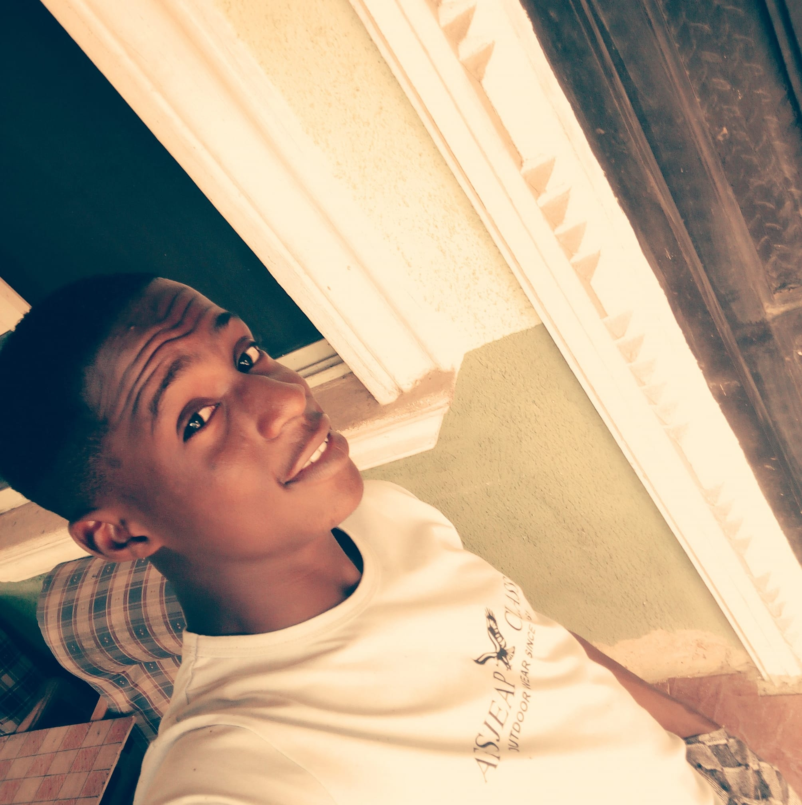

I was born in Aba , Abia State in Nigeria. In a family of 6. I had a twin actually but he did not make it.My mom will always tease me that i was so small like pepsi bottle. Normally as a last born i was mummy's favourite but i was not spared if i misbehaved. I feared my Dad more than anything , His face was very scary , Just a glances at you ,You will immiediately do the right thing . I was also sturbborn growing up .One obvious fact is that i love soccer from birth. I loved fc barcelona from birth
My Dad had the habit of giving me senior maths problems which i now really appreciate because i grew up to love maths and later studied mathematics in high institution
I lost my mom when i was 13 years old , It felt like a dream until i saw her been laid in her grave ,i could not believe my eyes . I then knew the real meaning of death , You never know when or how , Life is sometimes not fair but only cowards complains , We keep pushing no matter what . My older sister became a mother to us , Innocent me was still wishing and hoping that someday my mom will one day walk into my mom and whisper "danny boy i'm back" but it never happened . I had numerous dreams of her having lovely times until a relative gave me the scariest advice in my life, Thst if i keep mourning her she will come and take me too , I can never forget her words.From then on, anytime i saw her in my dream , i run as far as i can , i was so stupid running from my own mom , but shoukd i be blame i was scared of death , With time i stopped seeing her in my dreams.